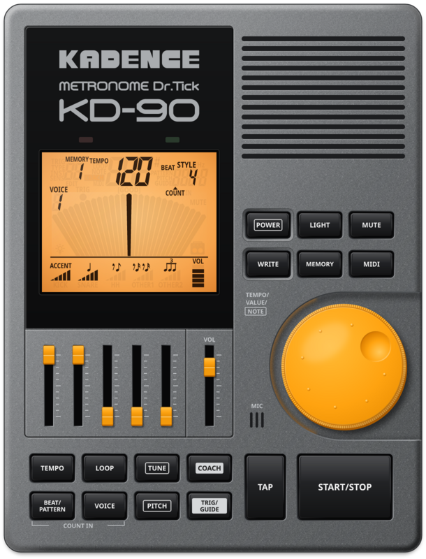

Kadence lettering
The branding on the black screen panel, in three styles set as one justified block:
KADENCE in heavy blocks with slit counters, METRONOME Dr.Tick in a small wide rounded
monoline, and KD-90 in the same monoline, large and medium weight. Every letter is drawn
in lettering.js; the app uses the same shapes.
